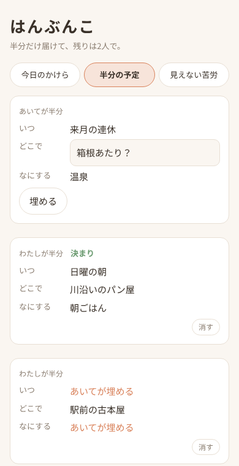
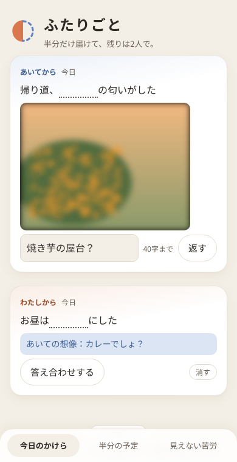
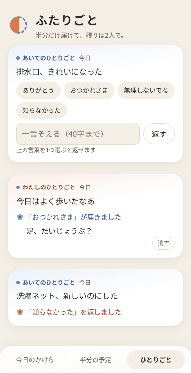

3つだけ、できること
どれも、ひとりでは完成しません。

半分の予定いちばんの特徴
「土曜の夕方」とだけ置いておく
「いつ」「どこで」「なにする」のうち、決めるのは一部だけ。空いたところは相手が埋めます。全部は埋められないようになっているので、どちらか一方が決めきることはありません。
2人で埋まったら「決まり」。埋まらなかった予定は2週間で静かに消えます。催促はしません。決まった予定は「日にち」を入れておくとその日まで残り、自分のカレンダーにも入れられます。

今日のかけら
今日のことを、少し隠して渡す
「今日は［ラーメン］を食べた」と書けば［］の中が隠れ、写真はぼかして届きます。相手は想像で一言返し、渡した側が答え合わせをします。
写真は7日で消え、一言だけが残ります。

ひとりごと
言えなかったことは、ひとりごとで
声に出さなかったことを、ひとりごとみたいに一文だけ置きます。相手が返せるのは「ありがとう」「おつかれさま」「無理しないでね」「知らなかった」の4つの言葉と、一言だけです。
家事の量を点数にしたり、どちらが多いかを比べたりはしません。数えはじめると、ありがとうが勝ち負けになってしまうからです。
相手を確かめる機能は、つくりません
仲がいいときは便利でも、仲が悪いときに相手を責める材料になるものは入れない。それがふたりごとの決まりです。
位置・既読・オンライン表示なし最終ログインや「入力中」も出ません。残るのは作った日だけで、時刻も持ちません。
連続記録も催促もなし「返事がまだです」の通知は送りません。通知は1日1回のまとめだけ。
比べるグラフなし投稿の数や家事の量を並べたり、スコアにしたりしません。
自分の投稿はいつでも消せる消したことは相手に知らされません。
休憩も退会も、ひとりで相手の許可はいりません。理由も聞きません。
2人は完全に対等片方だけが持つ管理者の権限や、相手の設定を変える機能はありません。
データは端末の中で暗号化してから送ります。アクセス解析や広告のためのツールは入れていません。このページも、外部のフォントや解析を読み込んでいません。
こんな2人に
- 「どこ行く？」「どこでもいいよ」が続きがちな2人
- 同じ家にいても、相手の毎日の小さなことを知らない2人
- 相手がしてくれていることに、もう少し気づきたい2人
- 連絡の頻度や既読で、お互いを縛りたくない2人
- 2人とも入れる必要がありますか？
- はい。片方が出した招待コードを、もう片方が入力するとペアになります。メールアドレスや電話番号の登録はいりません。
- 料金は？
- いまはすべて無料で、広告もありません。将来、写真を長く残すといった有料の機能を足すことがあっても、2人のやり取りとひとりごと、ペアの解除は無料のままにします。
- iPhone でも使えますか？
- ウェブ版で使えます。iPhone の Safari で https://tenmusu10.github.io/hanbunko/app/ を開き、共有ボタンから「ホーム画面に追加」をしてから、ホーム画面のふたりごとで招待をつくる・受け取ってください（Safari のままペアになると、ホーム画面のほうでは開けません）。App Store のアプリは、使ってくれる2人の声を聞いてから考えます。
- 機種変更をしたら？
- 読むための鍵は2人の端末の中だけにあるので、機種変更やアプリの削除をすると、それまでのやり取りは読めなくなります。新しい端末では、ペアを作り直してください。
もうすぐ、Android で
いまは身近な10組に試してもらいながら、仕上げているところです。
公開したら、ここに Google Play へのリンクを置きます。